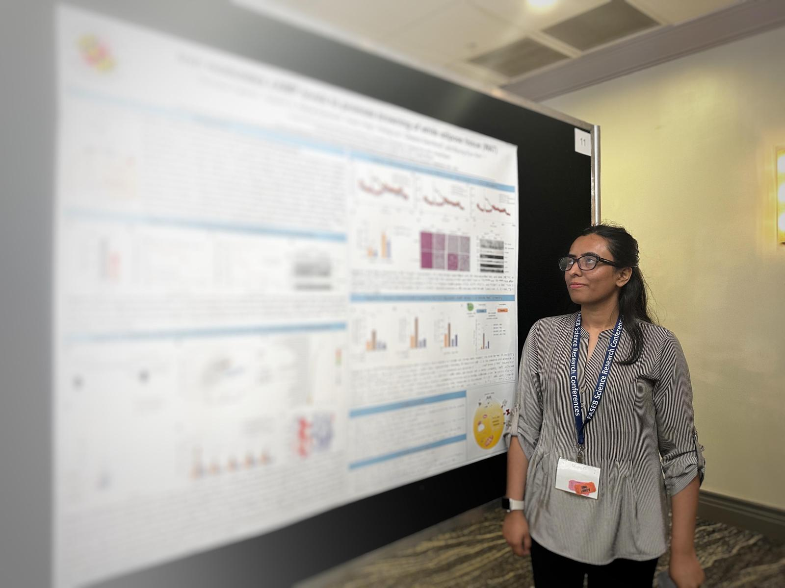

Rewind 2021: The Biotech Advancements at the Beginning of a New Decade ↗
Tamseel Fatima and Andreas Ebertz · The DNA Universe
I'm a PhD candidate in the Department of Animal and Avian Sciences at the University of Maryland, College Park.
My doctoral research focuses on understanding how iron availability shapes adipose tissue development and thermogenic signaling. I combine mouse models, cell-based systems, omics approaches, and molecular biology techniques to investigate how nutrient-gene interactions influence metabolic function.
This website is an informal extension of my research life, a space where I share experimental protocols, troubleshooting notes, scientific writing, and reflections on graduate school and beyond.

Iron Metabolism · Nutrient-Gene Interactions · Adipose Tissue Biology · Metabolic Regulation · Molecular and Cellular Biology · Translational Research
Funding supporting doctoral research and training at the University of Maryland.
Red Cell Club and East-West Iron Club Meeting, Baltimore, Maryland.
University of Maryland Graduate School.
University of Maryland Graduate School.
University of the Punjab, Lahore, Pakistan.
University of Maryland, College Park
University of the Punjab, Lahore, Pakistan · Gold Medal
My work explores how iron availability influences cellular function, development, and metabolic regulation.
Investigating how iron availability shapes cAMP signaling and the thermogenic activation of white adipose tissue.
Exploring the role of TfR1-mediated iron uptake in early postnatal adipose tissue development, remodeling, and browning.
Earlier research examining iron overload, hepatitis C, and liver and kidney function in patients with β-thalassemia.
Previous work with adipose-derived mesenchymal stem cells and biomaterial-based approaches to tissue repair.
First-author manuscript. Publication status to be updated.
Fayyaz T., Qadeer M. I., Irfan M., Amjad F., Fatima T., Husnain S. · Nutrition and Food Science
Amjad F., Fatima T., Fayyaz T., Khan M. A., Qadeer M. I. · Biomedical Reports, 13(5), 48
A dedicated space for experimental protocols, troubleshooting notes, and data analysis workflows.
My published science writing for The DNA Universe, including work from my time as a scientific content writer with Eurofins Genomics.
Tamseel Fatima and Andreas Ebertz · The DNA Universe
Tamseel Fatima and Andreas Ebertz · The DNA Universe
Tamseel Fatima and Andreas Ebertz · The DNA Universe
Tamseel Fatima · The DNA Universe
Tamseel Fatima and Andreas Ebertz · The DNA Universe
Tamseel Fatima and Andreas Ebertz · The DNA Universe
Tamseel Fatima · The DNA Universe
Tamseel Fatima and Andreas Ebertz · The DNA Universe
Tamseel Fatima and Andreas Ebertz · The DNA Universe
Andreas Ebertz and Tamseel Fatima · The DNA Universe
Tamseel Fatima and Andreas Ebertz · The DNA Universe
Original links will be added to the remaining articles after verification.
Reflections on graduate school, research experiences, and life beyond the laboratory.
A space for my artwork, mixed-media experiments, and creative projects.